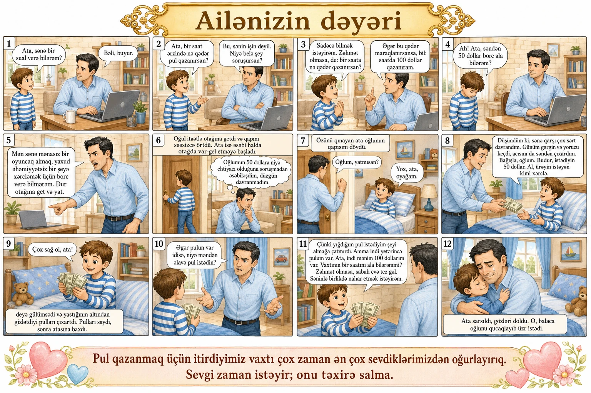

Ailənizin dəyəri
Oğul: — Ata, sənə bir sual verə bilərəm?
Ata: — Bəli, buyur.
Oğul: — Ata, bir saat ərzində nə qədər pul qazanırsan?
Ata: — Bu, sənin işin deyil. Niyə belə şey soruşursan?
Oğul: — Sadəcə bilmək istəyirəm. Zəhmət olmasa, de: bir saata nə qədər qazanırsan?
Ata: — Əgər bu qədər maraqlanırsansa, bil: saatda 100 dollar qazanıram.
Oğul: — Ah! (Başını aşağı salır.) Ata, səndən 50 dollar borc ala bilərəm?
Ata əsəbiləşdi:
Ata: — Mən sənə mənasız bir oyuncaq almaq, yaxud əhəmiyyətsiz bir şeyə xərcləmək üçün borc verə bilmərəm. Dur otağına get və yat.
Oğul itaətlə otağına getdi və qapını səssizcə örtdü. Ata isə əsəbi halda otaqda var-gəl etməyə başladı. Bir müddət sonra sakitləşdi və öz-özünə düşündü: «Oğlumun 50 dollara niyə ehtiyacı olduğunu soruşmadan əsəbiləşdim, düzgün davranmadım.» Özünü qınayan ata oğlunun qapısını döydü.
Ata: — Oğlum, yatmısan?
Oğul: — Yox, ata, oyağam.
Ata otağa girib dedi:
Ata: — Düşündüm ki, sənə qarşı çox sərt davrandım. Günüm gərgin və yorucu keçdi, acısını da səndən çıxardım. Bağışla, oğlum. Budur, istədiyin 50 dollar. Al, ürəyin istəyən kimi xərclə.
Oğul: — Çox sağ ol, ata! — deyə gülümsədi və yastığının altından gizlətdiyi pulları çıxartdı. Pulları saydı, sonra atasına baxdı.
Ata: — Əgər pulun var idisə, niyə məndən əlavə pul istədin? — deyə yenidən əsəbiləşdi.
Oğul: — Çünki yığdığım pul istədiyim şeyi almağa çatmırdı. Amma indi yetərincə pulum var. Ata, indi mənim 100 dollarım var. Vaxtının bir saatını ala bilərəmmi? Zəhmət olmasa, sabah evə tez gəl. Səninlə birlikdə nahar etmək istəyirəm.
Ata sarsıldı, gözləri doldu. O, balaca oğlunu qucaqlayıb üzr istədi.
Pul qazanmaq üçün itirdiyimiz vaxtı çox zaman ən çox sevdiklərimizdən oğurlayırıq. Sevgi zaman istəyir; onu təxirə salma.
